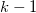
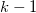

/math-4b382581f2f870c7449baa3e9c477efb.png "N=\sum_{i=1}^kl_i\,\!") であり、
であり、 /math-dddfbab30f141da749dec815073642cc.png "N \,\!") は観測データの合計数です。もし同順のスコアがあった場合、はで割られることで修正されます。ここで、
は観測データの合計数です。もし同順のスコアがあった場合、はで割られることで修正されます。ここで、/math-444ded531df49dd5e9d60e42154722ce.png "t \,\!") はグループ内の同率スコア数を表し、総和は同率になったグループ全体を表します。
はグループ内の同率スコア数を表し、総和は同率になったグループ全体を表します。
以下の説明は、NAGのアルゴリズムから引用したものです。
であり、 は観測データの合計数です。もし同順のスコアがあった場合、はで割られることで修正されます。ここで、 はグループ内の同率スコア数を表し、総和は同率になったグループ全体を表します。有意水準は/math-c15009ca5cbb034d023f145a4ed23b8d.png "\chi ^2\,\!") 分布に基づいており、この分布は  の自由度を持ちます。
分布に基づいており、この分布は  の自由度を持ちます。
このアルゴリズムの詳細は、nag_kruskal_wallis_test (g08afc)をご覧下さい。